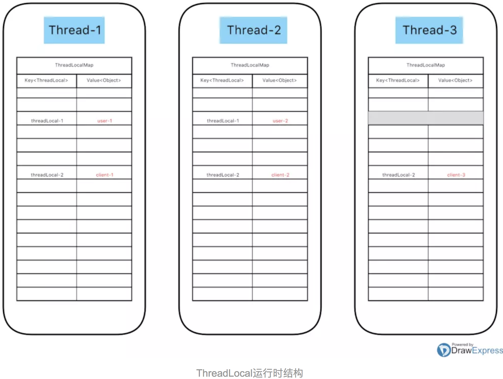

ThreadLocal 中很多巧妙的设计的讲解，如 ThreadLocal 的 hashCode 算法，ThreadLocalMap 中的 开方地址发 等，探究这些可以更深入理解 ThreadLocal 的设计思想。
简介
ThreadLocal 用一种存储变量与线程绑定的方式，在每个线程中用自己的 ThreadLocalMap 安全隔离变量，为解决多线程程序的并发问题提供了一种新的思路，如为每个线程创建一个独立的数据库连接。因为是线程绑定的，所以在很多场景也被用来实现线程参数传递，如 Spring 的 RequestContextHolder。也因为每个线程拥有自己唯一的 ThreadLocalMap ，所以 ThreadLocalMap 是天然线程安全的。
ThreadLocal 存储结构
首先我们来聊一聊 ThreadLocal 在多线程运行时，各线程是如何存储变量的，假如我们现在定义两个 ThreadLocal 实例如下：
|
|
我们分别在三个线程中使用 ThreadLocal，伪代码如下：
|
|
这三个线程都在运行中，那此时各线程中的存数数据应该如下图所示:

每个线程持有自己的 ThreadLocalMap，ThreadLocalMap 初始容量为16（即图中的16个槽位），在调用ThreadLocal 的 set 方法时，将以 ThreadLocal 为 Key 存储在 本线程的 ThreadLocalMap 里面，ThreadLocalMap 的 Value 为Object 类型，实际类型由 ThreadLocal 定义。图没有看懂的不要紧，一步一步往下看其运行原理，再回头看图，会有更清晰的理解。
ThreadLocal public方法
ThreadLocal 之 set() 方法
|
|
第一次调用时需要 creatMap，创建方式比较简单，不详解。这里重要的还是 ThreadLocalMap 的 set 方法。
ThreadLocal 之 get() 方法
|
|
ThreadLocal 之 remove() 方法
|
|
这里罗列了 ThreadLocal 的几个public方法，其实所有工作最终都落到了 ThreadLocalMap 的头上，ThreadLocal 仅仅是从当前线程取到 ThreadLocalMap 而已，具体执行，请看下面对 ThreadLocalMap 的分析。
ThreadLocalMap
ThreadLocalMap 简介
ThreadLocalMap 是ThreadLocal 内部的一个Map实现，然而它并没有实现任何集合的接口规范，因为它仅供内部使用，数据结构采用 数组 + 开方地址法，Entry 继承 WeakReference，是基于 ThreadLocal 这种特殊场景实现的 Map，它的实现方式很值得研究。
ThreadLocalMap 的 Entry 定义如下：
|
|
Entry 继承 WeakReference，以 ThreadLocal 为 key，类似 WeakHashMap ，对内存敏感。虽然继承 WeakReference，但只能实现对 Reference 的 key 的回收，而对 value 的回收需要手动解决。value 何时被回收？ 如果没有理解 value 的回收时间，那可能留下内存溢出的隐患。
PS：当 map.get() = null 的时候本文中将它称为 过期。
ThreadLocalMap 核心方法
ThreadLocalMap 之 key 的 hashCode 计算
ThreadLocalMap 的 key 是 ThreadLocal，但它不会传统的调用 ThreadLocal 的 hashCode 方法（继承自Object 的 hashCode），而是调用 nextHashCode() ，具体运算如下：
|
|
在 ThreadLocalMap 中 的 hashCode 全部使用 threadLocalHashCode 字段。threadLocalHashCode 用 final 修饰，不可变。threadLocalHashCode 的生成调用 nextHashCode()，所有 ThreadLocalMap 的 hashCode 使用静态的 AtomicInteger 每次增加 1640531527 来产生，对于魔数 1640531527 的工作原理，数学思想比较多，这里写个demo看一下基于这种方式产生的hash分布多均匀：
|
|
上述代码模拟了 ThreadLocal 做为 key 的hashCode产生，看看完美槽位分配：
|
|
PS：注意 ThreadLocal 的 nextHashCode 是由 static 修饰的，他是一个共享变量，所有的 ThreadLocal 共享一个 AtomicInteger，在其基础上 CAS 增加。
ThreadLocalMap 之 set() 方法
|
|
这个 set 方法涵盖了很多关键点：
- 开放地址法：与我们常用的Map不同，java里大部分Map都是用链表发解决hash冲突的，而 ThreadLocalMap 采用的是开发地址法。
- hash算法：hash值算法的精妙之处上面已经讲了，均匀的 hash 算法使其可以很好的配合开方地址法使用；
- 过期值清理：关于过期值的清理是网上讨论比较多了，因为只要有关于可能内存溢出的话题，就会带来很多噱头和流量。
简单介绍一下开放地址法和链表法
开放地址法：容易产生堆积问题；不适于大规模的数据存储；散列函数的设计对冲突会有很大的影响；插入时可能会出现多次冲突的现象，删除的元素是多个冲突元素中的一个，需要对后面的元素作处理，实现较复杂；结点规模很大时会浪费很多空间；
链地址法：处理冲突简单，且无堆积现象，平均查找长度短；链表中的结点是动态申请的，适合构造表不能确定长度的情况；相对而言，拉链法的指针域可以忽略不计，因此较开放地址法更加节省空间。插入结点应该在链首，删除结点比较方便，只需调整指针而不需要对其他冲突元素作调整。
ThreadLocalMap 为什么采用开放地址法？
个人认为由于 ThreadLocalMap 的 hashCode 的精妙设计，使hash冲突很少，并且 Entry 继承 WeakReference， 很容易被回收，并开方地址可以节省一些指针空间；然而恰恰由于开方地址法的使用，使在处理hash冲突时的代码很难懂，比如在replaceStaleEntry,cleanSomeSlots，expungeStaleEntry 等地方，然而真正调用这些方法的几率却比较小；要把上述方法搞清楚，最好画一画开方地址法发生hash冲突的状态图，容易理解一点，本文不详细探讨。
下面对 set 方法里面的几个关键方法展开：
replaceStaleEntry
因为开发地址发的使用，导致 replaceStaleEntry 这个方法有些复杂，它的清理工作会涉及到slot前后的非null的slot。
|
|
上文中的 run 不好翻译，理解为开放地址中一个slot中前后不为null的连续entry
cleanSomeSlots
cleanSomeSlots 清除一些slot（一些？是不是有点模糊，到底是哪些？）
|
|
当新元素被添加时，或者另一个过期元素已被删除时，会调用cleanSomeSlots。该方法会试探性地扫描一些 entry 寻找过期的条目。它执行 对数 数量的扫描，是一种 基于不扫描（快速但保留垃圾）和 所有元素扫描之间的平衡。
上面说到的对数数量是多少？循环次数 = log2(N) （log以2为底N的对数），此处N是map的size，如：
因此，此方法并没有真正的清除，只是找到了要清除的位置，而真正的清除在 expungeStaleEntry(int staleSlot) 里面
expungeStaleEntry(int staleSlot)
这里是真正的清除，并且不要被方法名迷惑，不仅仅会清除当前过期的slot，还回往后查找直到遇到null的slot为止。开发地址法的清除也较难理解，清除当前slot后还有往后进行rehash。
|
|
ThreadLocalMap 之 getEntry() 方法
getEntry() 主要是在 ThreadLocal 的 get() 方法里被调用
|
|
该方法比较简洁，首先运算槽位 i ，然后判断 table[i] 是否是目标entry，不是则进入 getEntryAfterMiss(key, i, e)；
下面展开 getEntryAfterMiss 方法：
|
|
这个方法是在遇到 hash 冲突时往后继续查找，并且会清除查找路上遇到的过期slot。
ThreadLocalMap 之 rehash() 方法
|
|
rehash() 里首先调用 expungeStaleEntries()，然后循环调用 expungeStaleEntry(j) ,此方法会清除所有过期的slot。
继续看 resize()：
|
|
resize() 方法里也会过滤掉一些 过期的 entry。
PS :ThreadLocalMap 没有 影响因子 的字段，是采用直接设置 threshold 的方式，threshold = len * 2 / 3，相当于不可修改的影响因子为 2/3，比 HashMap 的默认 0.75 要低。这也是减少hash冲突的方式。
ThreadLocalMap 之 remove(key) 方法
|
|
remove 方法是删除特定的 ThreadLocal，建议在 ThreadLocal 使用完后执行此方法。
总结
ThreadLocalMap 的 value 清理触发时间：
- set(ThreadLocal<?> key, Object value)
若无hash冲突，则先向后检测log2(N)个位置，发现过期 slot 则清除，如果没有任何 slot 被清除，则判断 size >= threshold，超过阀值会进行 rehash()，rehash()会清除所有过期的value； - getEntry(ThreadLocal<?> key) (ThreadLocal 的 get() 方法调用)
如果没有直接在hash计算的 slot 中找到entry， 则需要向后继续查找(直到null为止)，查找期间发现的过期 slot 会被清除； - remove(ThreadLocal<?> key)
remove 不仅会清除需要清除的 key，还是清除hash冲突的位置的已过期的 key；
清晰了以上过程，相信对于 ThreadLocal 的 内存溢出问题会有自己的看法。在实际开发中，不应乱用 ThreadLocal ，如果使用 ThreadLocal 发生了内存溢出，那应该考虑是否使用合理。
PS：这里的清除并不代表被回收，只是把 value 置为 null，value 的具体回收时间由 垃圾收集器 决定。
ThreadLocalMap 的 hash 算法和 开方地址法
由于 ThreadLocal 在每个 Thread 里面的唯一性和特殊性，为其定制了特殊的 hashCode 生成方式，能够很好的散列在 table 中，有效的减少hash冲突。
基于较少的hash冲突，于是采用了开放地址法，开放地址法在没有hash冲突的时候很好理解，在发生冲突时的代码就有些绕。因此理解 ThreadLocalMap 的新增、删除、查找、清除等操作，需要对开方地址法的hash冲突处理有较清晰的思路，最好在手边画一画开放地址法的hash冲突情况，目前没有在网上找的很好的讲解，争取在后续文章补充。